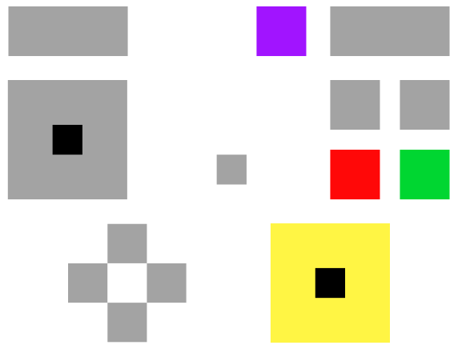

Gamecube Controller Input Viewer
View live inputs from your Gamecube Controller - lightweight tool useful for stream overlays
Tested and working on firefox/chrome with mayflash 4-port adapter in PC mode (detects lowest active controller)
raw values
if you like it, consider following me on twitter @j0ooop
* also if you have any suggestions or problems, let me know on twitter